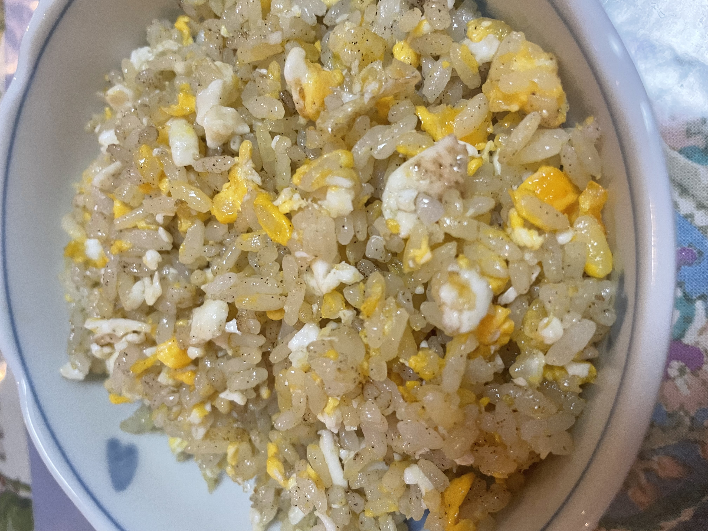
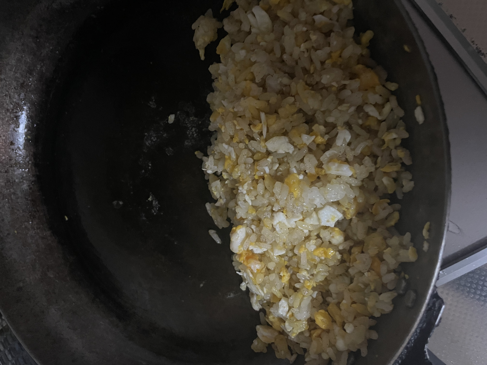

26/3/2（Posted）TERUO＠teruo
Eat the tongue with sauce. Do that and you win. Absolutely with sauce. Want to eat it again.
■King Salt Tongue_Pork（×Absolutely eat it with sauce and with rice.）_King Course
⇒★★★★ 4.0
■Yakiniku King Nagoya Tokushige Branch
■Nagoya City
■3718 yen
■Ate day：26/2/21

（Photo taken by myself）
26/3/2 (Posted) TERUO＠teruo
uu...mmm.
■Spaghetti Parma Style
⇒★★★ 3.0
■Saizeriya Motoyama Ekimae Branch
■Nagoya City
■400 yen
■Ate day: 26/2/21

(Photo taken by myself)
26/3/2 (Posted) TERUO＠teruo
There’s just something nice about it.
■Tarako & Popcorn Shrimp Doria
⇒★★★★ 4.0
■Saizeriya Motoyama Ekimae Branch
■Nagoya City
■400 yen
■Ate day：26/2/21

(Photo taken by myself)
26/2/20 (Posted) TERUO＠teruo
I kind of want to eat it again. At the Dome-mae location, it’s 4.0. The Motoyama Saizeriya was a 3.5 though. Maybe it’s the different plates—how the heat transfers? Or the way it’s served? I wonder what makes the difference.
■Peperoncino
⇒★★★★ 4.0
■Saizeriya Aeon Mall Nagoya Dome-mae
■Nagoya City
■300 yen
■Ate day: 26/2/14

(Photo taken by myself)
26/2/20 (Posted) TERUO＠teruo
Pretty good.
■Vegetable and Mushroom Pizza
⇒★★★⋆ 3.5
■Saizeriya Aeon Mall Nagoya Dome-mae
■Nagoya City
■400 yen
■Ate day: 26/2/14

(Photo taken by myself)
26/2/20 (Posted) TERUO＠teruo
There’s something intriguing about it.
■Tarako and Popcorn Shrimp Doria
⇒★★★★ 4.0
■Saizeriya Aeon Mall Nagoya Dome-mae
■Nagoya City
■400yen
■Ate day: 26/2/14

(Photo taken by myself)
26/2/18 (Posted) TERUO @teruo
It was normally good.
■Fried Chicken
⇒★★★⋆ 3.5
■COCO'S (Meito Yomogidai Branch)
■Nagoya City
■About 500yen
■Ate day: 26/2/13

(Photo taken by myself)
26/2/18 (Posted) TERUO＠teruo
Both the soy sauce ramen and the mapo rice are high level. I can totally see why some people get hooked on the mapo rice.
■Ramen Set (Soy Sauce Ramen + Mapo Rice)
⇒★★★⋆ 3.5
■Shisenrou
■Nagoya City
■780yen
■Ate day: 26/2/13


(Photo taken by myself)
26/2/16 (Posted) TERUO＠teruo
The base itself isn’t that good. Kimchi-flavored hot pot bases are a real challenge. I think developing a good base is difficult. I’ve tried a bunch of them.
■Tofu Chige
■Tofu・Cookdo's Tofu Chige Soup
■①Put water and soup in a pot, bring to a boil, and throw in the tofu.
⇒★★★ 3.0
■Ate day：26/2/12
■Genre：Hot Pot


(Photos I took)
26/2/15 (Posted) TERUO＠teruo
I want to eat this again.
■Chicken Wings
⇒★★★★ 4.0
■Shisenrou
■Nagoya City
■600yen
■Ate day: 26/2/11

(Photo I took)
26/2/15（Posted）TERUO＠teruo
Somehow, this taste is new. They’re using curry powder. Interesting.
■Deep-fried cartilage
⇒★★★★ 4.0
■Shisenrou
■Nagoya City
■550yen
■Ate day：26/2/11

（Photo I took）
26/2/15 (Posted) TERUO＠teruo
As expected. I want to eat it again. Getting this for 1000 yen is amazing. tasty.
■Night Ramen Set (Taiwan Ramen + Fried Rice + Taiwan Sweet and Sour Pork)
⇒★★★★ 4.0
■Shisenrou
■Nagoya City
■1000yen
■Ate day: 26/2/11


(Photo I took myself)
26/2/13（Posted）TERUO＠teruo
Somehow, it wasn’t as good as the Peperoncino I had at Saizeriya on 26/2/7. On 2/7 I ate at the Nagoya Dome-mae branch, and on 2/8 at the Motoyama branch, and the plates were different.
Since the plates were different, maybe the way the heat was retained or transferred was different as well?? That might have affected the taste.
■Peperoncino
⇒★★★⋆ 3.5
■Saizeriya Motoyama Ekimae Branch
■Nagoya City
■300yen
■Ate day：26/2/8

（Photo taken by myself）
26/2/13（Posted）TERUO＠teruo
Yummy
■Spicy Chicken
⇒★★★★ 4.0
■Saizeriya Motoyama Ekimae Branch
■Nagoya City
■300yen
■Ate day：26/2/8

（Photo taken by myself）
26/2/12（Posted）TERUO＠teruo
Good.
■Peperoncino
⇒★★★★ 4.0
■Saizeriya Aeon Mall Nagoya Dome-mae
■Nagoya City
■300yen
■Ate day: 26/2/7

(Photo taken by myself)
26/2/12（Posted）TERUO＠teruo
Good.I want to eat it again. I think the sauce is good.
■Young Chicken Diavolo Style × Rice（× At the end, put the rice on the hot plate and mix it with the corn and sauce before eating. I call it “corn rice” lol）
⇒★★★★ 4.0
■Saizeriya Aeon Mall Nagoya Dome-mae
■Nagoya City
■650yen
■Ate day：26/2/7


(Photo taken by myself)
26/2/11（Posted）TERUO＠teruo
It was normally good.
■Milano-Style Doria
⇒★★★⋆ 3.5
■Saizeriya (Aeon Mall Nagoya Dome-mae)
■Nagoya City
■300yen
■Ate day：26/2/7

（Photo taken by myself）
26/2/11 (Posted) TERUO＠teruo
Good.
■Spicy Chicken
⇒★★★★ 4.0
■Saizeriya (Aeon Mall Nagoya Dome-mae)
■Nagoya City
■300yen
■Ate day: 26/2/7

(Photo taken by myself)
26/2/10（Posted）TERUO＠teruo
It was just normally good.
■Pizza Quattro Formaggi
⇒★★★⋆ 3.5
■COCO’S (Meito Yomogidai Branch)
■Nagoya City
■About 550yen
■Ate day：26/2/6

(Photo taken by me)
26/2/10 (Posted) TERUO @teruo
A reliable 4.0 as always.
■Mini Doria
⇒★★★★ 4.0
■COCO'S (Meito Yomogidai branch)
■Nagoya City
■About 600yen
■Ate day: 26/2/6

(Photo taken by myself)
26/2/7（Posted）TERUO＠teruo
I feel like this is good in its own way.
■Buffalo Mozzarella Margherita Pizza
⇒★★★⋆ 3.5
■Saizeriya Aeon Mall Nagoya Dome-mae
■Nagoya City
■400yen
■Ate day：26/2/2

(Photo taken by myself)
26/2/7（Posted）TERUO＠teruo
I was impressed. yummy.
■Spicy Chicken（× Order only the spicy chicken. Focus and eat it.）
⇒★★★★ 4.0
■Saizeriya Aeon Mall Nagoya Dome Mae
■Nagoya City
■300yen
■Ate day：26/2/2

（Photo taken by me）
【Premiun Commnet（Billing）】
26/2/4（Posted）TERUO＠teruo
The ehomaki I ate (that was made for me) yesterday on 26/2/3 was way too good. Seriously, way too good.
That’s definitely a 4.0: “It breaks through the high wall of being just ‘normally good’—I want to eat it again.”
Apparently, if you buy one outside, it costs around 900 yen per roll. That’s way too expensive!!
If you buy the ingredients and make it at home, it’s insanely cheap.
This feels just like how Steve Wozniak said (I think he mentioned this in a book) that building a computer himself cost about $200,
but when Apple sold the Apple I, it was priced at $500.
※Though maybe it wasn’t specifically the Apple I story, but a basic computer—and the numbers might be off too lol.
It’s also the same as how Michael Dell realized that assembling computers himself and selling them would be cheaper, and turned that into a business.
I guess that’s just how the world works.
When you make things yourself, you can do it cheaper. That’s what crossed my mind.
For now, without overthinking things, I just want to be able to make ehomaki and feel happy!!
Actually, I *will* feel happy!!
By the way, this time I helped make it too—like, about one hundred-millionth of it lol.

26/2/3（Posted）TERUO＠teruo
The twice-cooked pork rice was insanely good.
■Ramen Set (Taiwan Ramen + Twice-Cooked Pork Rice)
⇒★★★★ 4.0
■Shisenrou
■NagoyaCity
■780yen
■Ate day：26/2/2


(Photos taken by me)
26/2/2（Posted）TERUO＠teruo
normal. Good value for the price. Somehow huge.
■Baked Potato
⇒★★★ 3.0
■COCO'S (Meito Yomogidai branch)
■Nagoya City
■About 250 yen
■Ate day：26/2/1

(Photo taken by myself)
26/2/1 (Posted) TERUO＠teruo
Quite high level. Serving pizza of this quality at this price must be tough for the pizza industry. After eating this, you might think, "Why bother anywhere else?"
■Margherita
⇒★★★⋆ 3.5
■COCO'S (Meito Yomogidai Branch)
■Nagoya City
■About 550 yen
■Ate day: 26/1/31

(Photo I took)
26/2/1 (Posted) TERUO＠teruo
This is really good. Among Cocos dishes, this might be the best one lol
■Mini Doria
⇒★★★★ 4.0
■COCO'S (Meito Yomogidai Branch)
■Nagoya City
■About 600 yen
■Ate day：26/1/31

(Photo I took)
26/1/31（Posted）TERUO＠teruo
This store is good enough. I thought so because the Taiwan ramen is about 200 yen cheaper than the JR Nagoya Station branch.
■Taiwan Ramen
⇒★★★★ 4.0
■Misen Nagoya Station (Yanagibashi)
■Nagoya City
■770 yen
■Ate day：26/1/30

（Photo taken by myself）
26/1/30 (Posted) TERUO @teruo
I want to eat it again.
■Meat Ramen
⇒★★★★ 4.0
■Sugakiya(Aeon Mall Nagoya Dome-mae)
■NagoyaCity
■530yen
■Ate day: 26/1/20

(Photo taken by me)
26/1/30（投稿日）YOSHIO＠yoshio
New York–style sliced pizza. A large gas oven gives it an authentic feel. Baked at about 350℃. Two 1/8 slices larger than a palm, so the volume is satisfying,
The taste isn’t bad, but the cheese has a heavy, bland flavor, making it overall closer to fast food. The freshness of the tomato and the crispness・
and juiciness are weak, giving a dry, somewhat mushy impression. This may be a characteristic of New York–style pizza, assuming it’s not freshly made. Reconfirms that I’m a Neapolitan pizza person.
■Cheese pizza, Jalapeño pizza, Cola
⇒★★★ 3.0
■maple pizza
■Taito-ku, Tokyo
■Total 1600 yen
■Ate day：26/1/23

26/1/30（Posted）TERUO＠teruo
I want to eat it again.
■Ramen Set (Taiwan Ramen + Fried Rice)
⇒★★★★ 4.0
■Shisenrou
■Nagoya City
■750 yen
■Ate day：26/1/14


(Photos taken by myself)
26/1/7（Posted）TERUO＠teruo
First time in my life?? I tried making fried rice.
It was a normal 3.0, but I see some potential.
I used too little salt, but if I increase the salt, it could probably reach a 3.5.
There might be something beyond that.
Simple might be good.
I thought it might be a solid 3.5, but I’ll keep it at 3.0.
Well, yeah, probably a 3.0.
I’d end up being too easy on myself lol
But it has potential, so I’ll probably make it again.
It doesn’t have much of an unpleasant aftertaste.
Maybe because it’s just salt and pepper.
■First Fried Rice
■Egg・rice
■Oil・salt・black pepper
■① Pour oil into a frying pan, crack in an egg, and make a rough fried egg
(the egg white kind of takes shape and the yolk doesn’t do it).
② Add rice. Break it up and mix with a spatula (roughly)
③ Add black pepper and salt. Then mix.
⇒★★★ 3.0
■Ate day：26/1/6
■Genre：Friedrice


（Photo taken by me）
【Premium Comment (Billing)】
26/1/4 (Posted) TERUO @teruo
Yeah--------!! The okonomiyaki I ate yesterday, 26/1/3, at Nanjamonja (Nagoya City, near Shiogamaguchi Station) was insanely good—so good that even a full day later, I’m still moved by it.
One of the reasons I created Yummy is because I truly believe that *what* you eat and *how* you eat it are absolutely essential to how delicious something becomes. When you put spicy sauce and mayonnaise on the deluxe okonomiyaki, it brings out every single aspect of its deliciousness.
Honestly, I kind of feel like it could’ve been a 5.0. I can’t help but think that, haha. It was really, truly amazing. Man… the best. This is what you call being moved.
Okonomiyaki
26/1/3 (Posted) TERUO＠teruo
Insanely delicious. A monster. Even a divine 5.0 rating would be fair. Seriously, this is god-tier.
I wonder how many times I’ve been here. Eating the Deluxe Okonomiyaki with spicy sauce and mayonnaise
is a 5.0. Divine. Too delicious. And the extra-spicy Yakisoba is truly amazing. Too good. And the surprising
Jaga Butter. A dish that surpasses Jaga Butter itself.
The Deluxe Okonomiyaki was so good that I ordered another one at the end. The flavor of the broth, or rather,
the seafood taste, is incredible. The world’s best okonomiyaki. If there’s something better, please let me know.
We ate as a pair.
Absolutely amazing. I might rate it 5.0, but I’ll stick with 4.5.
100% going again. I’ve been coming here forever.
And seriously, the spicy sauce and mayonnaise are essential.
■Deluxe Okonomiyaki: 2 pcs × Extra-spicy Yakisoba 2-spice large portion (Meat, Shrimp, Squid) × Jaga Butter
(×Absolutely, under any circumstances, put spicy sauce and mayonnaise on the Deluxe Okonomiyaki.)
⇒★★★★ 4.5
■NanjyaMonja
■NagoyaCity
■4350yen(Deluxe Okonomiyaki; 1200yen × 2 = 2400yen)
■Ate day: 26/1/3


(Photo I took)
【Premium Comment (Billing)】
26/1/3 (Posted) TERUO @teruo
I had doria at Cocos on 1/2 (2026), and yeah—it's seriously good.
If you look at the doria section below, you can tell how different the photos of Cocos’ doria are between 12/2/25 and 1/2/26 lol.
It’s probably the amount of sauce. Even so, I honestly think Cocos’ doria is insanely delicious.
I really wish they’d just give us the recipe.
I want to make it at home.
At this point, I’m basically a Cocos master lol.
But hey—more masters, step up!!
Doria
26/1/2 (Posted) TERUO＠teruo
It was seriously delicious. It tastes like happiness. How good was it? So good that it made me want to try making doria at home.
Compared to when I ate doria at Cocos on 25/12/2, it felt like this one had more sauce. If you compare the photos, you can probably see the difference. That might be one reason why it was so good.
■Mini Doria
⇒★★★★ 4.0
■COCO'S(Meito Yomogidai branch)
■NagoyaCity
■About600yen
■Ate day: 26/1/2

(Photo taken by me)
【Premium Comment (Billing)】
26/1/2 (Posted) TERUO @teruo
I didn’t buy it myself, and I didn’t cook anything either, but the seafood bowl I ate on 1/1 and 1/2 was really good.
It was made by putting sashimi—octopus, salmon, sea bream, bonito, etc.—bought from Lopia (the supermarket run by Katopan’s husband) on vinegared rice.
For some reason, it felt tastier than sashimi from an ordinary supermarket.
I once heard from a high school student who works part-time at Lopia that their fish is good, and yeah… that was legit.
If I remember correctly, Lopia originally started as a butcher shop, so I’d heard rumors that their meat is good—but honestly, their sashimi is great too.
It’s a supermarket that really makes you curious.
26/1/1 (Posted) TERUO @teruo
When I took the first sip of the soup,it had impact.
Somehow,it has a gentle flavor.
■Meat Ramen (× Start by taking a few spoonfuls of the soup first.)
⇒★★★★ 4.0
■Sugakiya(Aeon Mall Nagoya Dome-mae)
■NagoyaCity
■530yen
■Ate day: 26/1/1

(Photo taken by me)
25/12/31（Posted on）TERUO＠teruo
good. That reassuring, comforting taste.
■Ramen with Meat
⇒★★★★ 4.0
■Sugakiya (Nagoya ESCA)
■Nagoya City
■590yen
■Ate day：25/12/30

(Photo taken by me)
25/12/29（投稿日）YOSHIO＠yoshio
With a subtle saltiness and the natural sweetness of wheat, the dough itself is delicious, with a crispy texture. The gentle sweetness and juiciness of olive oil and mozzarella, combined with the outstanding sweet-and-tangy flavor of tomatoes. The aftertaste is light. “This is pizza.”
■Margherita, Cola（×First, eat it just as it is and savor it to the absolute limit!）
⇒★★★★⋆ 4.5
■Pizzeria e Trattoria da ISA
■〒153-0042 1-14-17 Aobadai, Meguro-ku, Tokyo
■3000 yen
■Ate day：25/11/2


（Photos taken by me）
25/12/29（Posted） TERUO@teruo
High Quality.
■Ramen set（Tonkotsu ramen＋Tenshinhan）
⇒★★★⋆ 3.5
■Shisenrou
■Nagoya City
■780yen
■Ate day: 25/12/27


(Photo taken by myself)
25/12/29（Posted） TERUO@teruo
4.0.
■Ramen set（Taiwan ramen＋fried rice）
⇒★★★★ 4.0
■Shisenrou
■Nagoya City
■750yen
■Ate day: 25/12/26


(Photo taken by myself)
25/12/29（Posted） TERUO@teruo
In the end,I want to eat it again..
■Ramen set（Taiwan ramen＋fried rice）
⇒★★★★ 4.0
■Shisenrou
■Nagoya City
■750yen
■Ate day: 25/12/22


(Photo taken by myself)
25/12/5（Posted） TERUO@teruo
Good.
■Taiwan Ramen
⇒★★★★ 4.0
■Shisenrou @ Nagoya City
■600yen
■Ate day: 25/12/5

(Photo taken by myself)
25/12/2（Posted） TERUO＠teruo
Gently yummy.
■Mini Doria
⇒★★★★ 4.0
■COCO'S （Chain） @ Nagoya City
■About 600yen
■Ate Day: 25/12/2

(Photo taken by myself)
25/12/1（Posted） TERUO＠teruo
Yummy!! I love this.The soup is a monster.
With the Meat Ramen at 530 yen, I’m already happy. So damn good.
■[Super Ramen] Meat Ramen(×Start by drinking about five spoonfuls of the soup with the spoon provided. That’s where it begins.)
⇒★★★★⋆ 4.5
■Sugakiya (AEON Mall Nagoya Dome-mae) @ Nagoya City
■530yen
■Ate Day: 25/12/1

(Photo taken by myself)